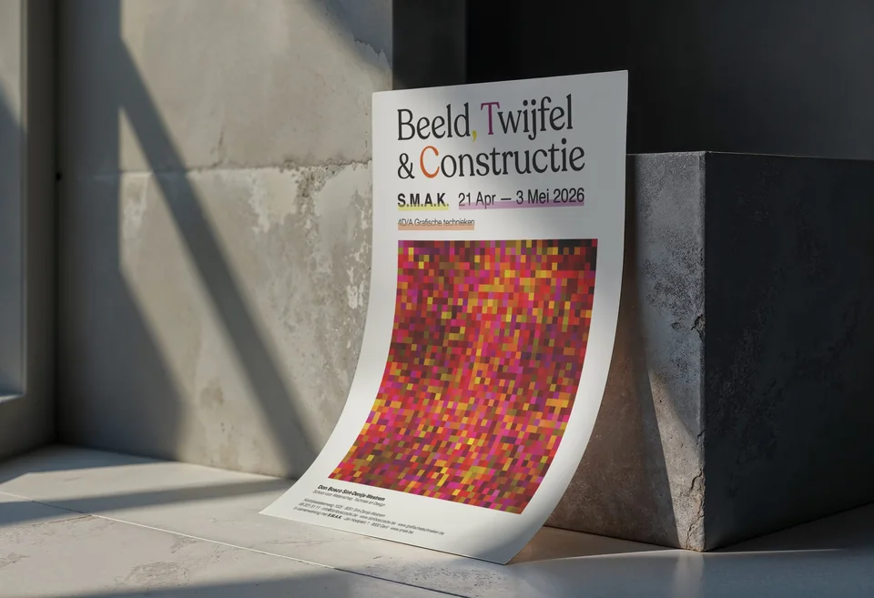
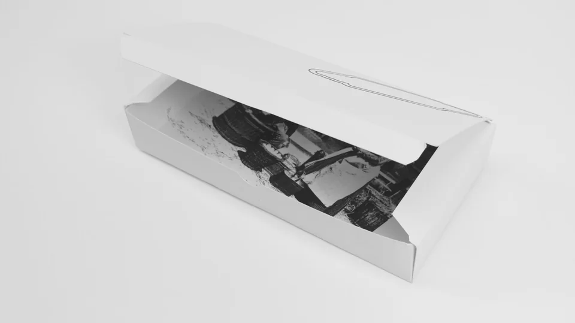
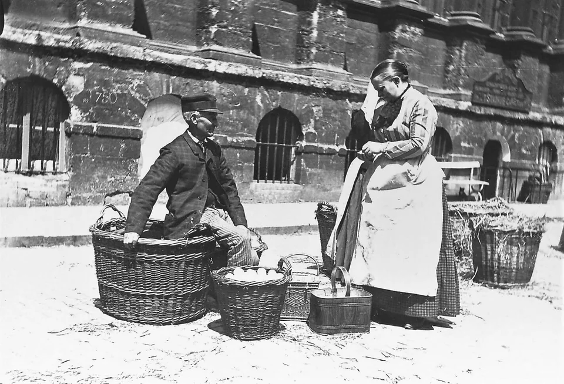
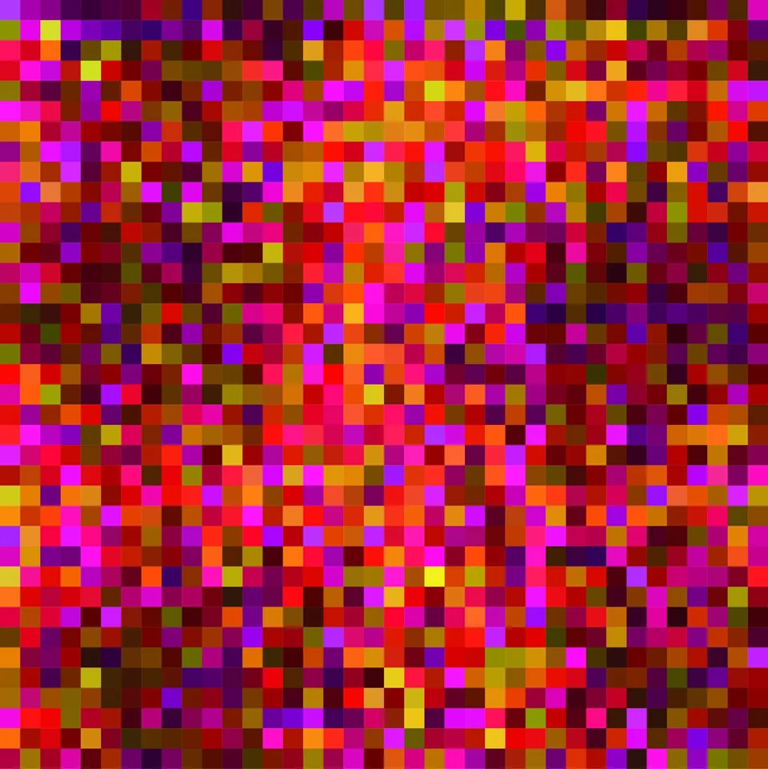
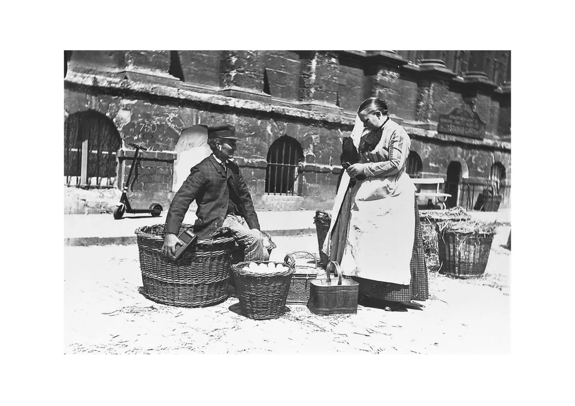
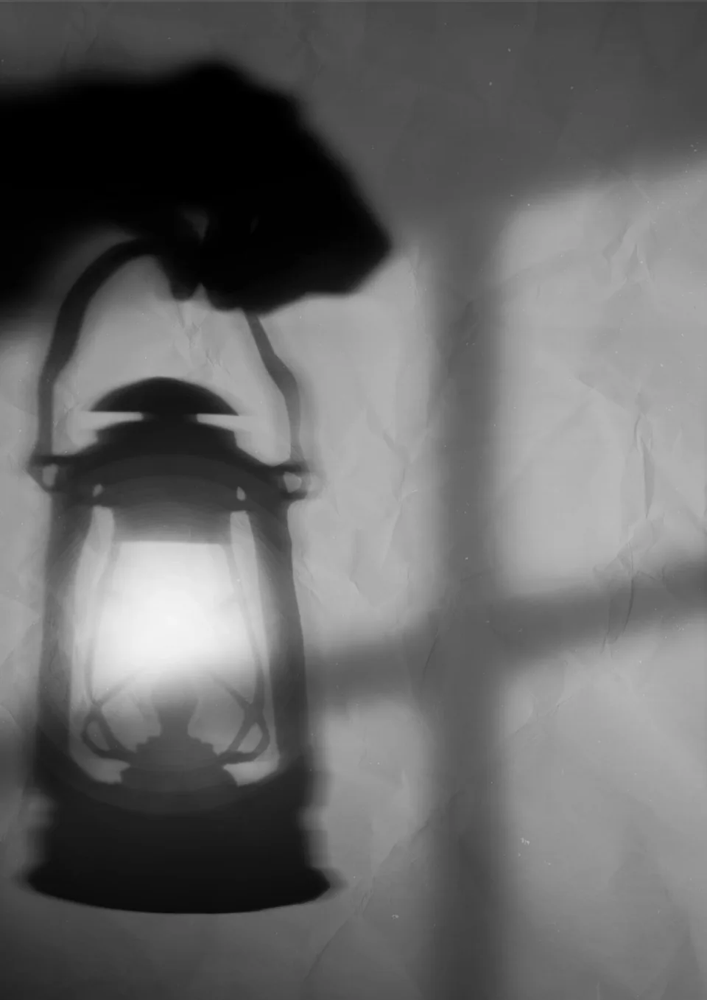
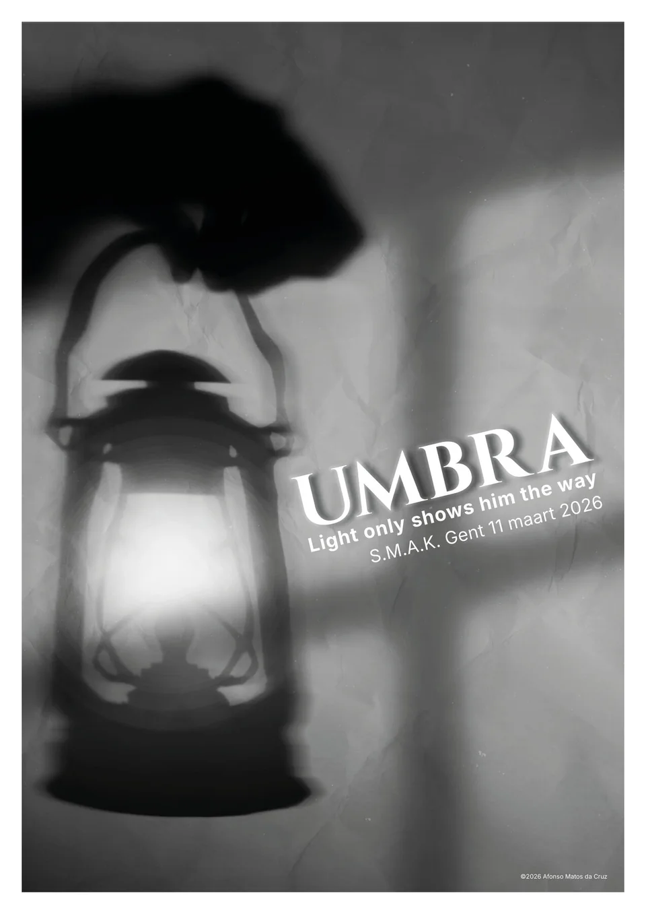
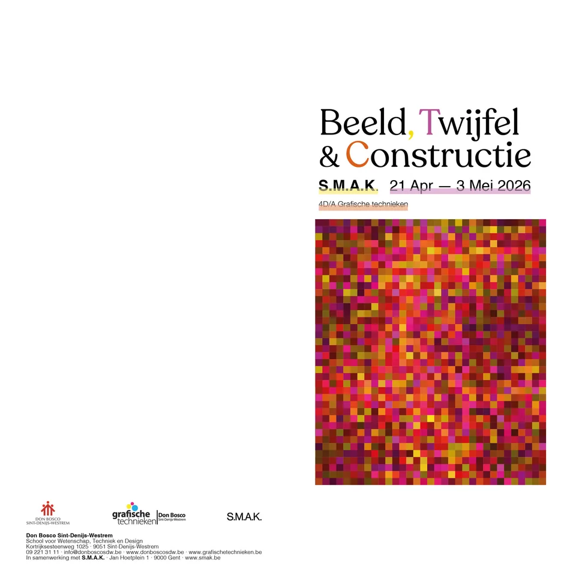
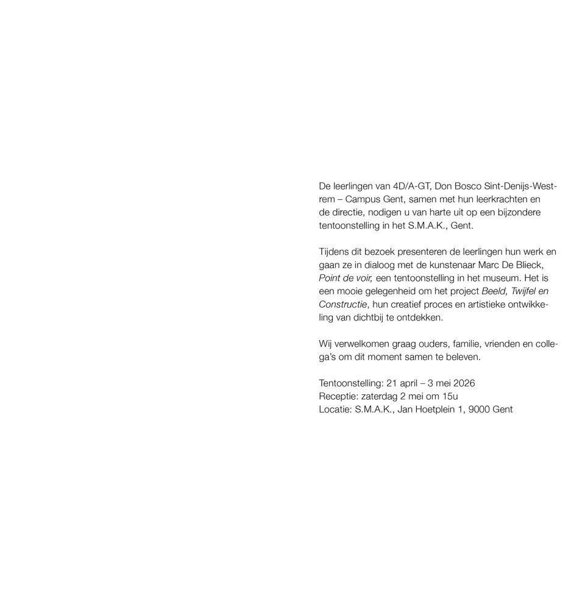

When do we believe an image? That question drives this campaign for the exhibition Beeld, Twijfel & Constructie (Image, Doubt & Construction).
The brief starts from the photographic work of Marc De Blieck. Photography is more than a neutral record here: technology, cultural habits and aesthetic choices all shape what we take to be real.
I translated doubt, construction and perception into one graphic language. On the poster a pixelated image takes centre stage and a few letters of the serif title are coloured. The same pixel image returns in the invitations and animations.
The result is a campaign made up of a poster, invitations, two animations and a website, all in the same visual language.










Websites for this project
These are school websites that open on their own. They load fonts from Google (see privacy).